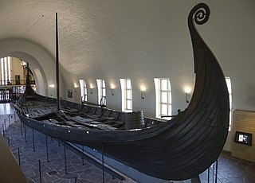
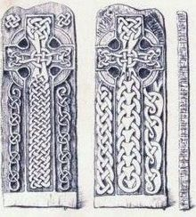
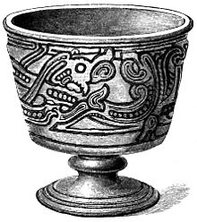
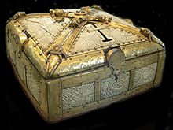
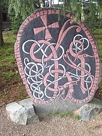

Mitología nórdica
Los términos mitología nórdica, mitología germánica y mitología escandinava comprenden todo lo
relativo a la religión, creencias y leyendas de los pueblos escandinavos germanos, incluidos aquellos que se
asentaron en las antiguas Islandia, Britania, Galia e Hispania, donde se reunieron las fuentes escritas de la
mitología nórdica. Es la versión mejor preservada de la antigua mitología germana, común a todos los pueblos
germanos. La mitología germana, a su vez, ha evolucionado de una mitología indoeuropea temprana.
Elementos sobrenaturales
| DEIDADES |
SERES |
OTROS |
| Odín |
Valquirias |
Yggdrasil |
| Thor |
Enanos |
Ragnarök |
| Balder |
Elfos |
Niflheim |
| Loki |
Gigantes (Jotun) |
| Höðr |

Cosmología
En la mitología nórdica el mundo está representado como un disco plano. El disco está situado en las ramas del árbol
del mundo Yggdrasil, que sostenía los nueve mundos. En él habitaban varias criaturas entre las que destacamos a las
siguientes: un dragón llamado Nidhogg que habitaba en las raíces. Este dragón roía las raíces para derribar a un águila
sin nombre (consiguiéndolo en el Ragnarök) que habitaba en la rama más alta, y desde ahí vigila los nueve mundos. Esta
a su vez tiene un halcón llamado Veðrfölnir en el entrecejo, que vigila los movimientos depenel águila. Además, hay una
ardilla llamada Ratatösk que corretea de las raíces a la copa llevando noticias falsas del dragón al águila, y viceversa,
sembrando así la discordia entre ellos. Asgard, la región alta del cielo, (as- indica áss/Æsir, gard es asentamiento o
residencpeneia), donde vivían los dioses, estaba localizada en el centro del disco, y solamente podría llegarse hasta allí
caminando por el arco iris (el puente Bifröst), guardado por Heimdall, quien estaba provisto de un gran cuerno con el que
avisaba cada vez que un Æsir (dioses del panteón de la mitología nórdica) o un Vanir lo cruzaba. Los gigantes vivían en
un lugar llamado Jötunheim.
Había una fría y oscura morada llamada Niflheim, y en la zona más profunda de esta se encontraba Helheim, lugar regido por
Hela, hija de Loki. De acuerdo a la Edda prosaica, este era el lugar último de residencia de la mayoría de los muertos.
Estaba situado en algún lugar al sur del ardiente reino de Muspelheim, hogar de los gigantes de fuego.
Entre otros reinos que componen esta cosmología podemos destacar Alfheim, hogar de los elfos de luz (ljósálfar) y
Svartálfaheim, hogar de los elfos oscuros. En medio de Asgard y Niflheim se encontraba Midgard, la región baja del cielo,
el mundo habitado por los humanos (véase Tierra Media).
La cosmología de la mitología nórdica incluye un fuerte componente de dualidad. Por ejemplo el día y la noche tienen sus
contrapartidas mitológicas: Dagr/Skinfaxi y Nótt/Hrímfaxi, el sol y el lobo que la persigue (en esta mitología «el» sol
es femenino y «la» luna, masculina) trayendo la oscuridad Sól y Sköll, la luna y el lobo que la persigue Máni y Hati, y
la oposición total entre Niflheim y Muspelheim que da origen al mundo. Esto puede verse reflejado en una profunda creencia
metafísica en los opuestos para la creación del universo.

Referencias en el arte
Se denomina arte vikingo al desarrollado en los países nórdicos y sus áreas de influencia durante la época vikinga (siglos
VIII-XII). Forma parte del estilo zoomórfico germánico, desarrollado a partir de influencias del arte romano tardío, el arte
celta y motivos de los pueblos de las estepas de Asia.
Se trató principalmente de un arte aplicado, presente en objetos de la vida cotidiana, tales como herramientas, utensilios y
joyas, aunque también se utilizó en piedras rúnicas y de manera tardía en iglesias. Se conservan principalmente ejemplares de este
arte en metales y piedra, pero también estuvo presente en madera y tela. Cronología de los estilos de decoración animal escandinavos.
De acuerdo a su desarrollo suele dividirse en seis estilos: Broa-Oseberg, Borre, Jelling, Mammen, Ringerike y Urnes.
- Broa-Oseberg
El motivo característico de este estilo son las figuras de bestias zoológicamente indeterminadas, con cuerpos curvos y
proyecciones en forma de zarcillos.
En sus cuerpos se distinguen extremidades prensiles que se agarran al cuerpo de otro animal o al propio. Los textiles de
Oseberg son de las pocas piezas de tela que se conservan del arte vikingo. El estilo también está influenciado por tradiciones
de la era de Vendel, que actualmente no se consideran como un estilo independiente

- Borre
El estilo se caracteriza por un patrón de trenzado en las líneas, similar a los eslabones de una cadena, que forman
figuras simétricas. Su motivo más característico es la trenza anillada, que consiste en dos bandas trenzadas con
aros en los puntos de unión. También aparecen bestias con garras prensiles. Las piezas alcanzan mayor finura en la
técnica de filigrana y granulación. Además de en Borre (principalmente en piezas de bridas de caballo), también hay
importantes ejemplos de broches en Dinamarca y Suecia.
El estilo se extendió a las islas británicas, donde alcanzaría bastante popularidad. En la isla de Man existen varias
piedras monumentales de este estilo, al igual que en Gran Bretaña e Irlanda.

- Jelling
El estilo Jelling es una fase de la zoomórfica decoración vikinga del siglo X. El nombre proviene de que originalmente
se aplicaba la denominación a un conjunto de objetos en Jelling, Dinamarca, entre las que se encontraban las grandes
estelas rúnicas de Harald Blåtand, pero posteriormente éstas fueron catalogadas en el estilo Mammen.

- Mammen
El estilo Mammen es una fase de los estilos de decoración zoomórfica vikinga de finales del siglo X y principios del
XI, surgió de forma gradual a partir del estilo Jelling. El nombre del estilo se debe a los hallazgos realizados en
una cámara funeraria de Jutlandia, Dinamarca. Entre los objetos hallados había un hacha de plata grabada en la que
en uno de sus lados aparecía un ave muy estilizada con largos apéndices enrollados a lo largo del cuerpo.
También comprende representaciones animales más realistas como los leones en las piedras de Jelling. Durante el periodo
de este estilo aparecen por primera vez formas vegetales claramente diferenciadas, en forma de sarmientos, zarcillos
y hojas.

- Ringerike
El estilo Ringerike es un estilo de decoración zoomórfica vikinga que se desarrolló del siglo X al siglo XI, como
evolución del estilo Mammen anterior. Recibió su nombre de un grupo de piedras rúnicas decoradas con animales y plantas,
fabricadas con piedra proveniente de las canteras de Ringerike, en el distrito norte de Oslo.
Los motivos más comunes del estilo son leones, aves, y animales en forma de banda y en espiral, como serpientes y dragones,
con la cabeza de perfil y los ojos redondos. Muchos de sus elementos aparecen ya en el arte escandinavo anterior, tales
como diferentes tipos de cruces, terminaciones en forma de palmera y sogas formando circunvoluciones que unen varios
elementos, notándose la influencia de los estilos contemporáneos del arte anglosajón y arte otoniano.

- Urnes
El estilo Urnes toma su nombre en honor a la puerta tallada de la iglesia de madera de Urnes en Noruega, aunque la mayoría
de los objetos decorados con este estilo son estelas rúnicas de Uppland, Suecia, por lo que muchos historiadores prefieren
considerarlo un estilo de piedras rúnicas.
El estilo se caracteriza por tener figuras de animales, generalmente serpientes y dragones, esbeltos y estilizados que se
entrelazan en diseños apretados. Las cabezas de los animales están de perfil, tienen ojos delgados y en forma almendrada y
suelen tener protuberancias rizadas sobre las narices y los cuellos.
